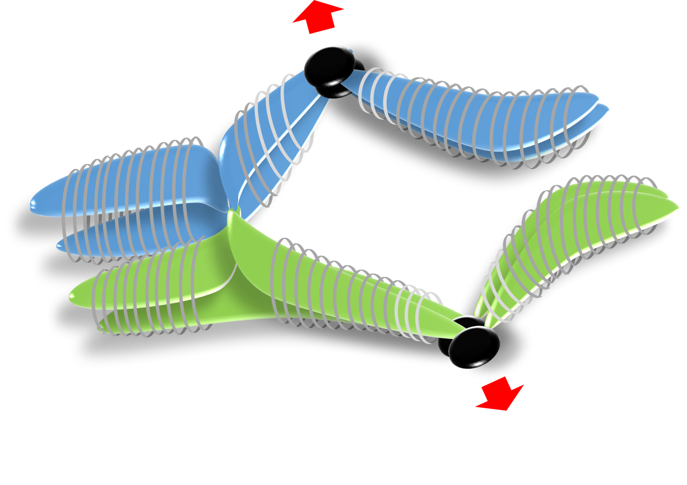
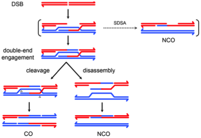
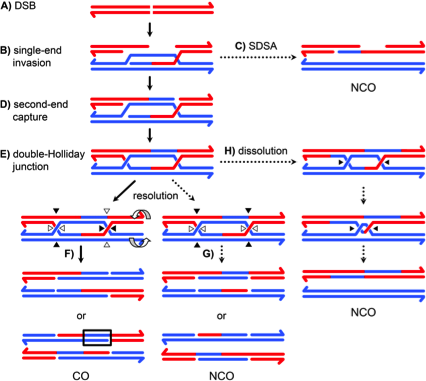
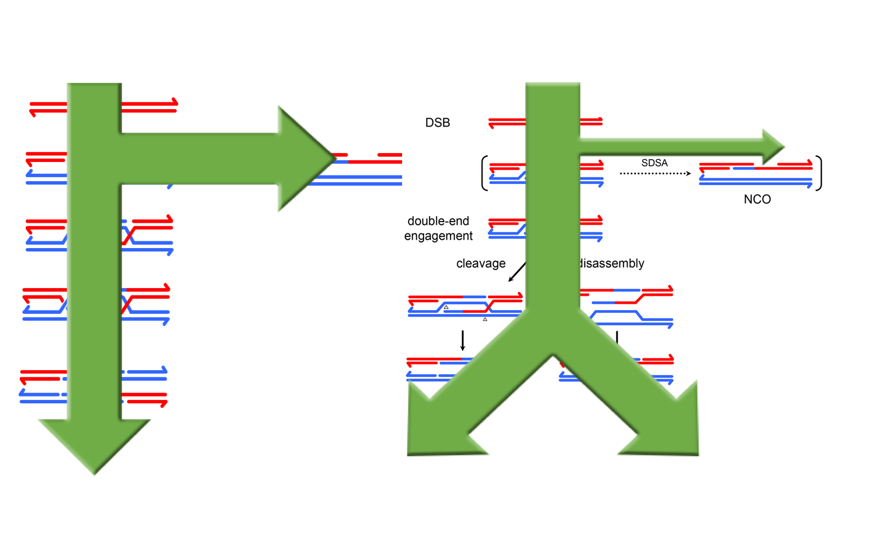

Sexually reproducing species face a fundamental math problem: each individual has two copies of the genome, one maternal and one paternal. If each individual passes on both copies of the genome, their progeny will have four copies; the next generation would then have eight copies, and so on. To solve this math problem, sexually reproducing organisms pass on just one copy of the genome using a specialized cell division process called meiosis.
 Unlike mitosis, in which cells divide only once to produce identical diploid daughter cells, meiosis involves two rounds of cell division. After genome replication, homologous chromosomes find each other in the nucleus and separate during the first meiotic division. Sister chromatids then separate in the second meiotic division, resulting in four genetically unique haploid gametes, each bearing half the chromosome complement.
The cell uses a series of complex processes to ensure homologous chromosomes segregate before sister chromatids. Chief among these is the formation of crossovers, which are the reciprocal exchange of DNA between homologous chromosomes. Crossovers ensure homologous chromosomes are paired before the first division happens. They are also one of the mechanisms that generate genetic diversity among the four haploid products (we can have a heated discussion over which one of these functions in most important).
 Crossovers form by using homologous recombination to repair programed DNA double-stranded breaks. More breaks are made than crossovers, however, and those breaks that are not repaired as crossovers are repaired as noncrossovers (gene conversions). The distribution of crossovers along a chromosome occurs in a stereotyped pattern that is shaped by both crossover-promoting and crossover-suppressing forces, collectively referred to as crossover patterning mechanisms. Since only crossovers made in specific parts of the chromosome are effective for chromosome segregation, the choice of repair outcome is a critical regulatory point in establishing the distribution of crossovers across the genome.
Chromosome inversions are naturally occurring structural aberrations that, when heterozygous, disrupt the recombination landscape by suppressing crossing over. The crossover suppression is due to two distinct mechanisms. First, single crossovers that occur within an inversion result in structurally abnormal chromosomes that are generally lethal and never recovered in the progeny. Second, inversion breakpoints prevent crossovers from forming in the immediate vicinity. Intriguingly, in Drosophila species, heterozygous inversions on one chromosome trigger a dramatic increase in crossing over on other structurally linear chromosomes in the genome. This phenomenon is referred to as the interchromosomal effect and was studied at the phenomenological level for decades, but very little progress has been made in understanding its molecular basis.
We’ve shown that heterozygous inversions change the recombination landscape by altering repair outcome in favor of crossovers on the structurally linear chromosomes but in favor of noncrossovers around inversion breakpoints. We are currently using whole genome sequencing approaches to address the mechanism by which heterozygous inversions alter the crossover/noncrossover decision to rearrange the recombination landscape.
Crown, K.N.*, D.E. Miller*, J. Sekelsky, R.S. Hawley, Local Inversion Heterozygosity Alters Recombination Throughout the Genome. Current Biology, in press. The current working model of meiotic recombination based on work in budding yeast is that double-strand breaks repaired as noncrossovers use a simple synthesis-dependent strand annealing mechanism, whereas double-strand breaks repaired as crossovers proceed through a more complicated intermediate called a double Holliday junction. These are genetically separable pathways, with evidence that noncrossovers form early and independently of crossovers.
We have shown that, in Drosophila, two classes of noncrossovers form from distinct structural intermediates. One class appears to use canonical synthesis-dependent strand annealing, while the other class comes from an intermediate where both ends of the double-strand break interact with the homologous chromosome (we’ve termed this the two-end engagement intermediate). Additionally, we’ve proposed that crossovers form through nicking of the same two-end engagement intermediate.
 Since crossovers and noncrossovers potentially come from differential resolution of the same structural intermediate in Drosophila, the decision to repair a break as a crossover or a noncrossover may occur late during recombination. A late repair decision may allow for flexibility during prophase when crossover patterning mechanisms are active. We are testing the hypothesis that flexibility and a late crossover/noncrossover decision are defining characteristics of meiotic recombination in Drosophila, and that higher-order crossover patterning mechanisms rely on that flexibility to establish the correct crossover distribution.
Crown, K.N., S. McMahan, and J. Sekelsky, Eliminating Both Canonical and Short-Patch Mismatch Repair in Drosophila melanogaster Suggests a New Meiotic Recombination Model. PLoS Genetics, 2014. 10(9): p. e1004583. PMC4154643. | PDF.